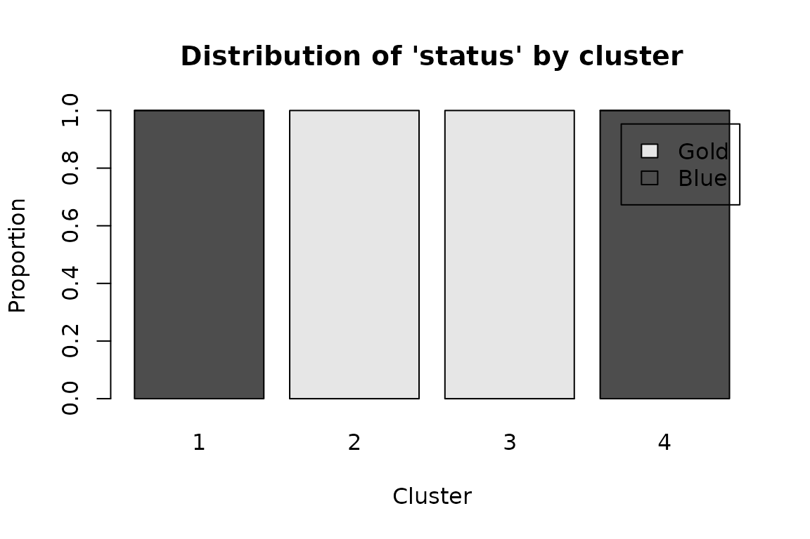

simOutrank clusters the traces of an event log by an
outranking model of similarity. Instead of collapsing every
perspective into a single distance, it scores each pair of traces on
several problem-specific criteria – activities, transitions, duration,
case attributes – and aggregates them with ELECTRE-III-style concordance
and discordance. The result is a credibility matrix S that
a spectral or hierarchical algorithm then partitions.
This vignette walks through the whole pipeline on the bundled
illustrative_log, a 25-case customer-service log from
Delias et al. (2021).
library(simOutrank)
#>
#> Attaching package: 'simOutrank'
#> The following object is masked from 'package:base':
#>
#> q
head(illustrative_log)
#> case_id activity timestamp status satisfaction
#> 1 G1 B 2021-01-01 00:00:00 Gold HIGH
#> 2 G1 E 2021-01-01 00:01:00 Gold HIGH
#> 3 G2 B 2021-01-01 00:00:00 Gold HIGH
#> 4 G2 E 2021-01-01 00:01:00 Gold HIGH
#> 5 G3 B 2021-01-01 00:00:00 Gold HIGH
#> 6 G3 E 2021-01-01 00:01:00 Gold HIGH1. Traces
as_traces() turns an event log into a
traces object: the time-ordered, integer-encoded activity
sequence of every case, plus the case-level attribute table.
traces <- as_traces(illustrative_log,
case_id = "case_id", activity = "activity",
timestamp = "timestamp")
traces
#> <traces>: 25 cases, 5 distinct activities
#> trace length: min 2, median 5, max 7
#> case attributes: status, satisfaction
summary(traces)[1:5, ]
#> case_id n_events n_distinct
#> 1 G1 2 2
#> 2 G2 2 2
#> 3 G3 2 2
#> 4 G4 2 2
#> 5 G5 2 22. Criteria
Criteria are built with the crit_* helpers. Each carries
a direction (similarity or dissimilarity), a weight, and ELECTRE-III
thresholds (indifference, similarity, and an optional veto). Here we
mirror the four criteria of the source paper: what activities occur, in
what order, and two case attributes.
criteria <- list(
crit_activity_profile(weight = 0.2, indifference = 0.7, similarity = 0.8,
veto = 0.4),
crit_edit_distance(weight = 0.2, similarity = 2, indifference = 3, veto = 6),
crit_nominal("status", weight = 0.3),
crit_nominal("satisfaction", weight = 0.3)
)
criteria[[1]]
#> <criterion 'activity_profile'>: direction = similarity, weight = 0.2
#> indifference = 0.7, similarity = 0.8, veto = 0.4Thresholds may be fixed numbers or quantiles of the criterion’s own
value distribution via q(); the parameter-tuning vignette explores that
choice.
3. Similarity
outrank_similarity() resolves any quantile thresholds,
normalises the weights, and aggregates the per-criterion indices into
S.
sim <- outrank_similarity(traces, criteria)
sim
#> <outrank_sim>: 25 cases, 4 criteria
#> S in [0.000, 1.000], symmetric = TRUE
round(sim$S[1:5, 1:5], 2)
#> G1 G2 G3 G4 G5
#> G1 1 1 1 1 1
#> G2 1 1 1 1 1
#> G3 1 1 1 1 1
#> G4 1 1 1 1 1
#> G5 1 1 1 1 14. How many clusters?
eigengap() plots the smallest eigenvalues of the
normalized Laplacian; a gap after the k-th value suggests k groups.
eigengap(sim, k_max = 8)
5. Cluster
The paper targets four natural groups (tier x satisfaction). Spectral clustering uses a seed for reproducible k-means.
clust <- cluster_traces(sim, k = 4, seed = 42)
clust
#> <outrank_clust>: 25 cases in 4 clusters (spectral)
#> cluster sizes: 1=8, 2=6, 3=5, 4=6
split(names(clust$memberships), clust$memberships)
#> $`1`
#> [1] "B6" "B7" "B8" "B9" "B10" "B11" "B12" "B13"
#>
#> $`2`
#> [1] "G1" "G2" "G3" "G4" "G5" "G11"
#>
#> $`3`
#> [1] "G6" "G7" "G8" "G9" "G10"
#>
#> $`4`
#> [1] "B1" "B2" "B3" "B4" "B5" "B14"6. Use the result
Join memberships back onto the event log, inspect a cluster’s attribute profile, and compute validity indices.
augmented <- augment_log(clust, illustrative_log)
#> Joining on case-id column 'case_id'.
head(augmented)
#> case_id activity timestamp status satisfaction .cluster
#> 1 G1 B 2021-01-01 00:00:00 Gold HIGH 2
#> 2 G1 E 2021-01-01 00:01:00 Gold HIGH 2
#> 3 G2 B 2021-01-01 00:00:00 Gold HIGH 2
#> 4 G2 E 2021-01-01 00:01:00 Gold HIGH 2
#> 5 G3 B 2021-01-01 00:00:00 Gold HIGH 2
#> 6 G3 E 2021-01-01 00:01:00 Gold HIGH 2
plot(clust, type = "profile", attribute = "status")
if (requireNamespace("clValid", quietly = TRUE)) {
validate_clusters(clust)
}
#> connectivity dunn
#> 20.276190 0.489198Where next
- Reproducing the illustrative example – the same pipeline framed as a published-result reproduction.
- Robustness: constraints and trimming – inject domain knowledge and remove outliers.
- Parameter tuning – weights, thresholds and k.